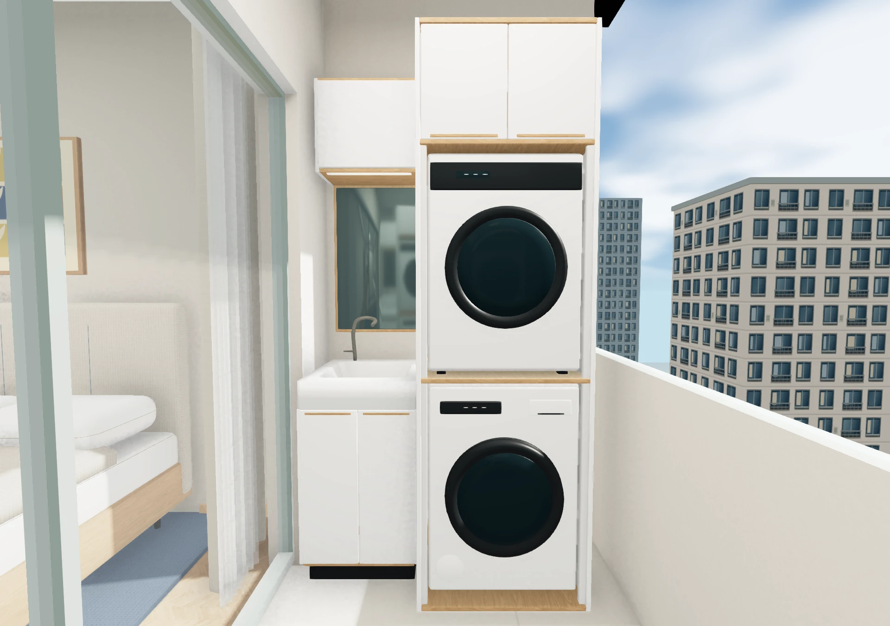
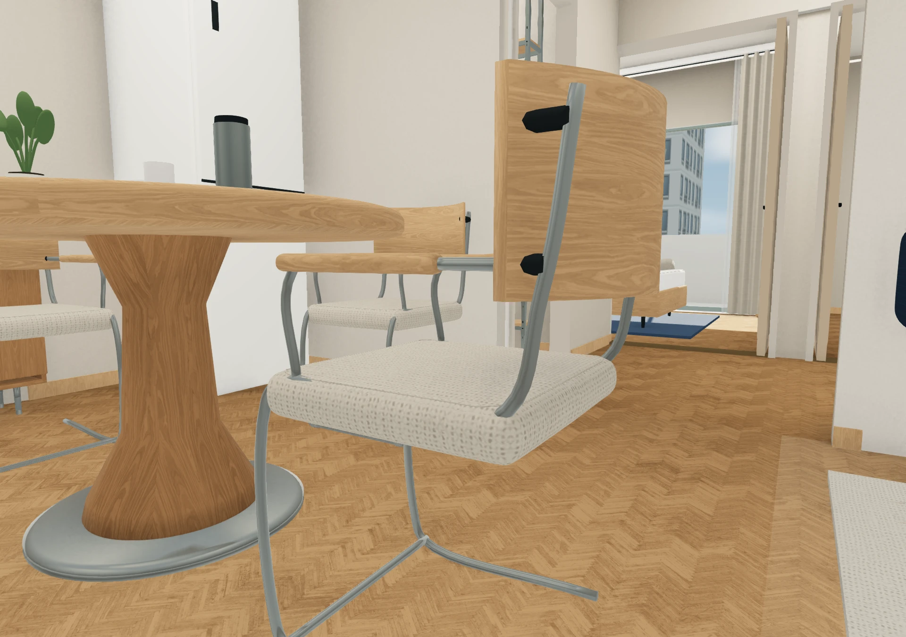

杭州 · 璞荟铭庭 / main 家装 A
家具装配、阳台洗漱角与窗玻璃反光
修复茶几、餐椅及全屋家具的脱离连接，按真实模型边界贴墙与落地；沿阳台东墙重建洗烘与台盆收纳角。8块窗玻璃增加低强度环境反射，仍保留窗外视野。
全部画面来自实际网页 WebGL1 画布。对比使用相同相机、昼夜设置和视口；手机为触控 / 微信 UA 模拟。阳台洗烘与台盆为自行建模，参考来源列于下方，没有把商品照片或装修案例图当作网页效果。
可编辑家具资产18 类 · 双 LOD330实体部件，每档分别检查
装配与支承36 组 / 46 项18类×2档接触；46项贴墙/支承记录
加载与建筑13 / 219 张PBR去重图 / 建筑烘焙，快照保持
同机位前后对比
修改前修改后
修复范围与保留空间
- 茶几边条接入托盘；餐桌支柱接入台面；餐椅增加座盘、扶手后连接与曲背固定件，横撑连接管架。
- 同步检查沙发、电视柜、两间衣柜、餐边柜、冰箱、橱柜、书桌、浴室柜及吊灯；处理踢脚、拉手、搁板及支承缝隙。
- 按真实导出尺寸贴墙和落地，摆件随柜体移动；茶几落在地毯表面。电视柜北侧保留书房房外推拉门停车空间，柜门正常分缝与活动通道继续保留。
- 洗烘柜与台盆柜沿阳台东实墙接齐，正面朝西，保留阳台门与中央通道；没有移动原墙与门洞。
- 玻璃使用 opacity 0.21 / roughness 0.12 / metalness 0 / 房间反射强度0.30，沿用现有画质与线性HDR回退。它是缓存的环境近似，不能当作精确平面镜。


对应验证
| 范围 | 结果与证据 |
|---|---|
| 导出拓扑 | 18类 / 330部件×两档，开放边、非流形边、退化、绕序和反向法线均0。 |
| 装配连接 | 36组导出装配全部为一个连通组，未检出脱离零件；BVH交叠/实体包含与有限采样距离，容差0.7mm。 |
| 贴墙 / 落地 / 玻璃 | 46项贴墙与支承间距小于1mm；两柜相接、阳台通行、玻璃反射像素贡献通过；含24张修改后画面参数。 |
| 门、床、设置与手机布局 | 整屋回归：7门闭合/扫掠与家具净空、两床三侧通行、4种手机横竖屏、保存/导入导出通过。 |
| 渲染与引擎 | HDR/depth回退及昼夜；Chrome / Windows WebKit / 微信UA通过，非真机验证。 |
有限的模型检查、浏览器回归和实际画面复核，不能替代任意自交、实际施工或工业级整体效果验收。建筑墙线、门洞与烘焙快照保持；主应用继续单HTML、自包含，不请求外部模型或贴图。
实际浏览的参考来源
- 小米官方白色洗衣机：白色箱体、大黑色圆门、细黑触控区与检修盖。
- 米家热泵烘干机10kg官方页：整条黑色控制面板与暗色圆门。官方参考为星缎银，场景改为米白搭配，并非精确复刻某白色SKU。
- 阳台洗衣区案例（2020-12-23）：参考“洗烘高柜＋旁侧台盆＋上柜”的组合。模型尺寸为网页布置值。